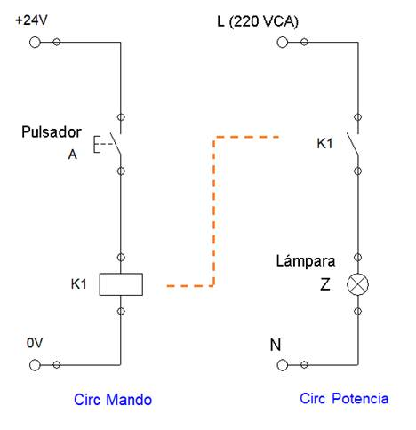
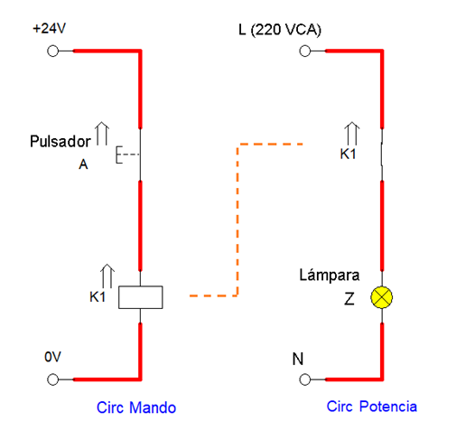
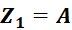
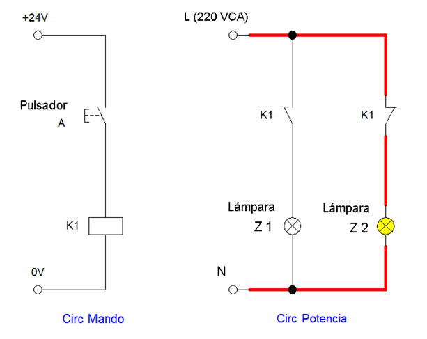
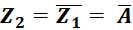
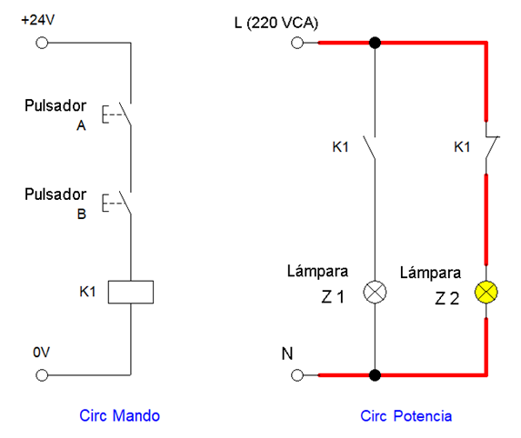
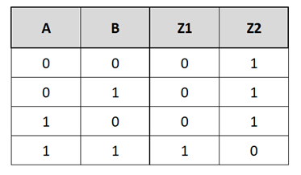
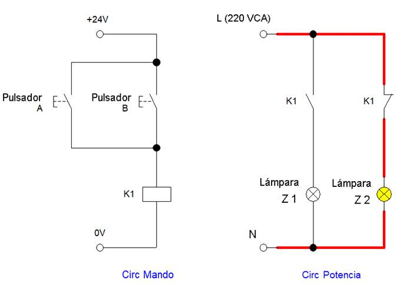
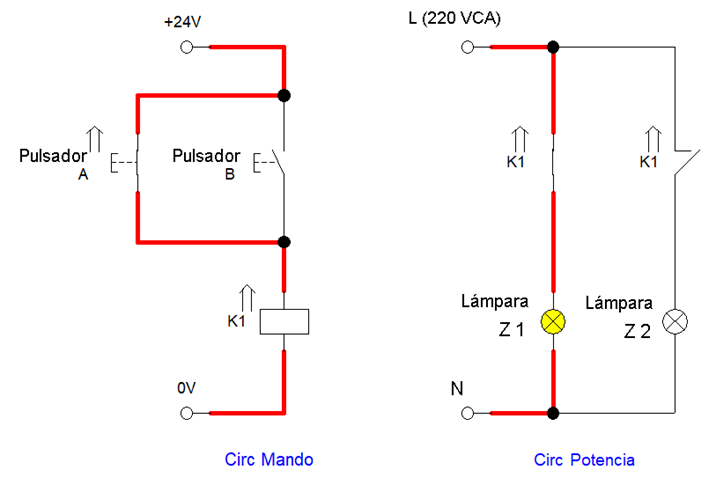
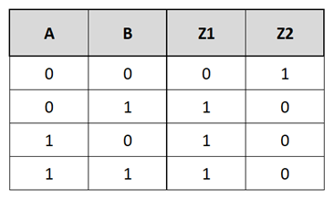

Implementación de Funciones Lógicas
En el circuito de la figura veíamos cómo se relacionaba el Circuito de Mando y la alimentación de la bobina del relé a través del Pulsador A, con el Circuito de Potencia donde se ubicaba el contacto NA del relé, que al cerrarse (por haberse alimentado la bobina K1 en mando) conseguía cerrar el circuito y encender la Lámpara Z.


Podemos pensar en una Función donde el Pulsador A que presiona un operario es una señal de entrada, y la carga que es la Lámpara Z la salida.
Estamos , que corresponde a la función IDENTIDAD ó SI.
¿Cómo implementamos una función NOT?
Simplemente utilizando en el circuito de potencia un nuevo contacto asociado a la bobina K1, pero esta vez NC.
En la figura agregamos una segunda lámpara, llamando Z1 a la lámpara asociada a al contacto NA, y Z2 a la lámpara conectada al contacto NC.
Como se ve en el esquema, como el contacto NC cierra la rama del circuito de Z2, la misma inicia encendida aún sin haber presionado el Pulsador A.

Si presionamos el Pulsador A, los contactos asociados a la bobina cambian su estado: el NA pasa a cerrarse, y el NC pasa a abrirse.
Las lámparas cambian de estado, encendiéndose Z1 y apagándose Z2.
Conseguimos:



Función AND y NAND (“NOT AND”)
Diseñemos nuevos circuitos que nos permitan implementar las funciones básicas estudiadas en la unidad anterior.
Si colocamos dos pulsadores en serie A y B, que alimenten la bobina K1, estamos en presencia de un PRODUCTO LÓGICO o función AND para la alimentación de la bobina, y por tanto también de la lámpara Z1.

Vemos que Z1 sólo encenderá en caso de presionarse los pulsadores A y B en simultáneo.
Y como utilizamos un contacto NC de la misma bobina para Z2, dicha lámpara sólo apagará en esas mismas condiciones, permaneciendo encendida en cualquier otro estado.


Obtenemos una función AND para Z1, y una función NOT AND ó también llamada NAND para Z2:

En este último caso, la unión de la compuerta AND y la compuerta NOT, se puede representar directamente con una nueva compuerta NAND que representa el mismo funcionamiento:

Función OR y NOR (“NOT OR”)
Analicemos lo que sucedería al colocar dos pulsadores esta vez en paralelo alimentando la bobina K1.

Obtenemos una SUMA LÓGICA ó Función OR para la lámpara Z1, ya que con cualquiera de los pulsadores A ó B presionados, alcanza para que Z1 encienda.
Por su parte, al ser Z2 la negación del estado de la bobina (y en particular de Z1), decimos que Z2 está cumpliendo una función NOT OR, o bien NOR con los pulsadores A y B.




De forma análoga al caso anterior, la unión de la compuerta OR seguida de la compuerta NOT, se puede representar directamente con una nueva compuerta NOR que representa el mismo funcionamiento: